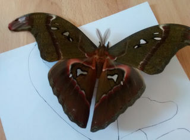

Attacus Imperator je méně známý bratr druhu Attacus Atlas.
Sice není tak krásně vybarven, ale dle všeho je o něco málo větši.
Pracovní text!!!
Housenky ...
Housenka se zivi serikem a ptacim zobem.
Housenka je v tomto stadiu asi pul roku.
Kdyz uz je housenka dostatecne velka,
zacne se kuklit.
Pri kukleni prestane zrat a zacne kolem sebe delat vlakna.
Zakuklena housenka ma cerny obal kolem kukly,
a teprve pod obalem ma ukrytou kuklu.

Samec Attacus Imperator.
Samička Attacus Imperator.
Kukly ...
Kukla se musi kazdy den kropit normalni vodou,
housenka je ve stadiu kukleni mesic a pul az 2 mesice.
Kdyz se motyl vylihne nejdriv se mu susi kridla.
Motyl zije tyden az 14 dni, samec a samice si spoji zadecky a tak vajicka oplodni.
Samice klade az tisic vajicek. Housenky jsou ve vajickach pet az sedm dni.
vlastni skusenost